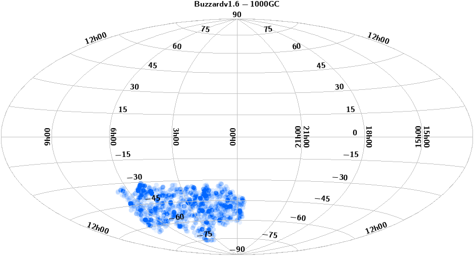
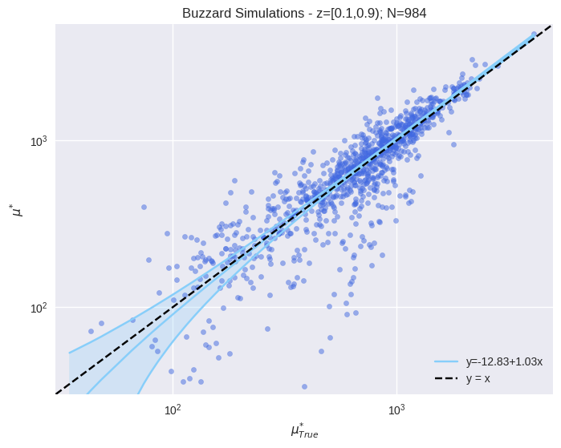
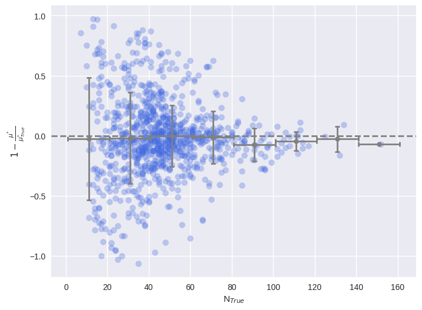
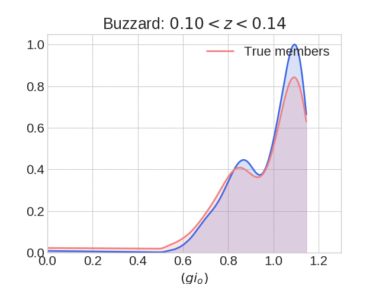
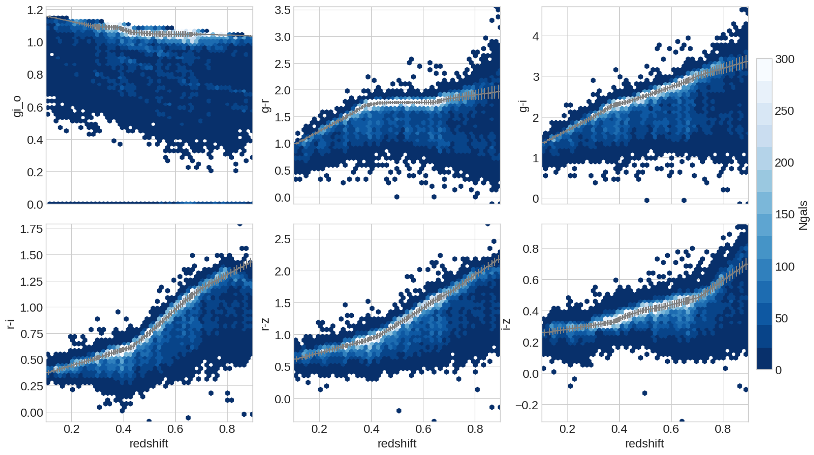

Dataset
Welcome to Copacabana web verification page. Here we have details of the input data and some analystics of the output catalog.
| Dataset Name |
Size |
Date |
| Buzzard v1.6 |
1000 GC |
01/01/20 |
Sky Plot
 |
Figure: Distribution of the sources on the sky
Results
to write
 |
Figure: Identity
 |
Figure: Residual
Color
|  |
Figure: Color distribution for different redshift intrevals.
 |
Figure: Colors as a function of the redshift.